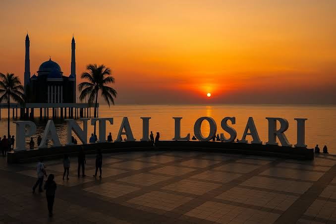

Tentang Pantai Losari

Pantai Losari adalah salah satu destinasi wisata paling terkenal di Makassar. Pantai ini memiliki pemandangan sunset yang sangat indah dan banyak pengunjung datang untuk menikmati suasana laut dan kuliner khas daerah.
Pantai Losari juga menjadi tempat yang cocok untuk berjalan santai, berfoto, dan menikmati makanan khas Makassar di sekitar area pantai.
Galeri Foto



Daftar Aktivitas
-
Menikmati Sunset
Menunggu waktu senja sambil menikmati pemandangan laut yang memesona dan warna langit yang berubah.
-
Jalan Santai di Tepi Pantai
Berjalan santai sambil menikmati angin laut dan suasana ramai pengunjung di sekitar area wisata.
-
Mencicipi Kuliner
Menikmati makanan khas Makassar seperti pisang epe, coto, dan berbagai jajanan pinggir pantai.
-
Fotografi
Memotret pemandangan laut, sunset, dan aktivitas wisatawan untuk kenang-kenangan.
Informasi Lokasi
Alamat: Jl. Penghibur, Kecamatan Ujung Tanah, Makassar, Sulawesi Selatan
Jam Buka: Setiap hari, 08.00 - 22.00 WITA
Biaya Masuk: Gratis
Transportasi: Mudah dijangkau dari pusat kota dan kendaraan umum
Tabel Informasi
| Fasilitas | Deskripsi | Catatan |
|---|---|---|
| Area Santai | Tempat duduk dan area panorama untuk menikmati sunset | Tersedia di sepanjang tepian pantai |
| Warung Kuliner | Berbagai makanan dan minuman khas Makassar | Biasanya ramai saat sore hari |
| Toilet Umum | Fasilitas kebersihan untuk pengunjung | Terletak di area utama wisata |
| Parkir | Area parkir kendaraan roda dua dan roda empat | Disarankan datang lebih awal saat weekend |
Formulir Reservasi & Pertanyaan
Tips Berwisata
- Datang sebelum sunset agar dapat menikmati pemandangan paling indah.
- Bawa alas duduk dan minuman ringan untuk kenyamanan.
- Pastikan membawa uang tunai karena beberapa kios masih memakai pembayaran kas.
- Jaga kebersihan area dan patuhi arahan petugas setempat.